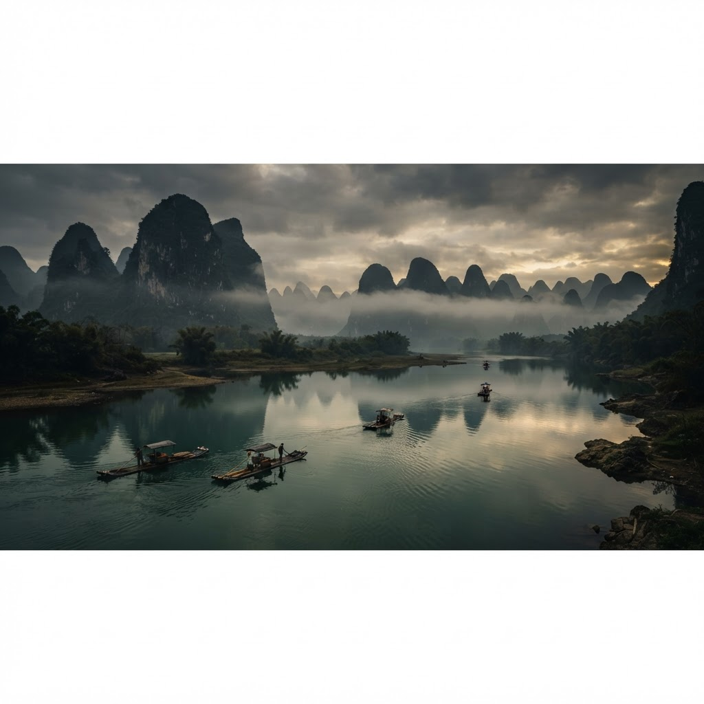
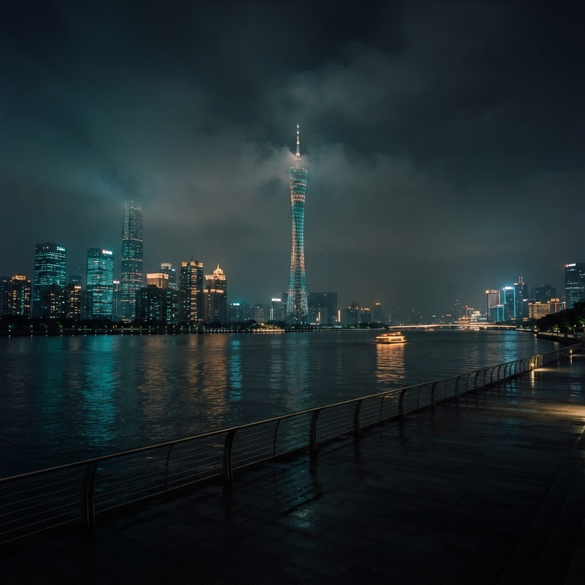
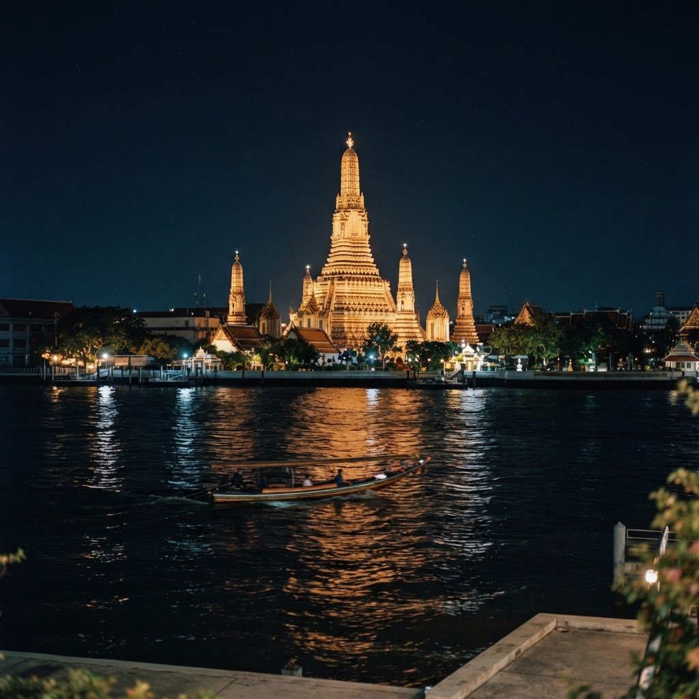

–
Days
The Journal · Trip 01
London → Antalya → Astana → Urumqi → Zhangjiajie → Li River → Bangkok → London
13 — 26 October 2026
The first journey home to Antalya in sixteen years
Until the coach pulls out of Baker Street
Sunrise London 07:20 · Sunset from the air
Baker Street to Luton Airport — National Express, live-tracked.
Wizz Air · LTN → AYT · 4h35. Online check-in mandatory.
The journey starts where the family line began. Sixteen years since the last arrival — Antalya, and the sea, again.
A slow day on home ground — the first one here since 2010.
Sunrise 07:03 · Sunset 18:23
Last quiet day on home ground before the long haul east.
Sunrise 07:04 · Sunset 18:21
Sunrise 07:05 · Sunset Antalya 18:20
AJet · AYT → ESB (Ankara) · 1h10.
AJet · ESB → NQZ (Astana) · 4h45, overnight.
A night spent crossing into the steppe.
Sunrise 06:40 · Sunset 17:18
Air Astana · NQZ → URC · 3h25, overnight into China.
Two nights in the air, and the map turns east for good.
Sunrise Ürümqi 08:28 · Sunset Zhangjiajie 18:06
Sichuan Airlines · URC → TFU (Chengdu Tianfu) · 4h.
Sichuan Airlines · TFU → DYG (Zhangjiajie Dayong) · 1h15. Desk check-in, passport verification.
Five minutes, £5, straight to the downtown hotel zone — Tianmen Mountain cable car station.
The 30-minute cable car ride straight up the vertical cliffs.
West loop cliff paths and the Glass Skywalk.
Indoor mountain tunnel escalators.
Shuttle bus down the 99 hairpin bends to downtown.
72 Wonder Tower — illuminated view and food stalls.
No. 1 Inn @ the Corner, Wulingyuan.
Land at the bottom of the pillar forest and climb it before dark.
Sunrise 06:41 · Sunset 18:05
45 minutes from downtown to Wulingyuan East Gate.
Park entry, passport scan, free valley shuttle.
Bailong Elevator — 326 metres up in 88 seconds.
Yuanjiajie / Avatar Peaks — flat cliff trails to the Hallelujah Mountain.
Tianzi Mountain — the narrow brush-like stone spires.
Tianzi Cable Car down.
Ten-Mile Natural Gallery — open-air monorail through the canyon floor.
Family-style dinner back at the hostel.
The day the totems were made for.
Sunrise 06:42 · Sunset 18:04
Golden Whip Stream — flat river trail on the canyon floor, wild monkeys above.
High-speed train from Zhangjiajie West towards Huaihua / Changsha.
The long slow K1473 sleeper south — Guilin.
Morning under the pillars, midnight rolling towards the karst.
Sunrise Xingping 06:39 · Sunset Bangkok 17:56

Guilin station to Xingping Town, Li River.
Motorised bamboo raft on the Li River, the 20-Yuan-Note waterfront, between green karst peaks.
West Street, Yangshuo — the local beer fish.

D1835, Yangshuo to Guangzhou South.
Metro Line 3 to Baiyun Airport Terminal 2.
9 Air AQ1007 · CAN → BKK · 3h05, into Thailand.
The horizon shot from the watermark, then south into the heat.
Sunrise ~06:10 · Sunset ~17:55
25 Oct · Moonrise 17:05 · Moonset 07:00 — the almost-full Hunter's Moon over Bangkok

Mad Monkey hostel, five nights booked. The city to wander at last — no schedule but the heat.
After twelve days of connections, a city to stand still in.
Sunrise Bangkok 06:11 · Sunset London 16:46
Full Moon 04:11, mid-flight · Moonrise London 16:20 — into the dusk he lands in
Norse Atlantic Airways · BKK → LGW (London Gatwick) · 12h10, west into home.
Fourteen days, two continents, one name kept standing.